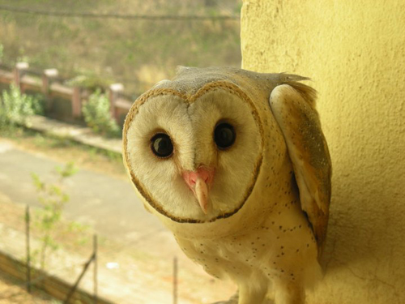
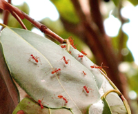

About Fotographique
Welcome Fellow
Has the shutterbug bitten you? Do you have an eye for photography? If yes, here's a moment for you! We are organising a photography competition to attract and discover some talents in this field. This will be a good platform to showcase the work of amateur, passionate enthusiasts and emerging photographers. Grab you camera and start shooting. Please go through the rules and regulations.
Rules and Regulations
1. Every participant can submit at most one photograph in each of the above sections. You must be the copyright holder of your submitted work. Participants must not infringe on the privacy rights,copyright or other rights of any person.
2. Mail the photographs via the submission form given in this website before 12th October.
3. A participant has also the option to change his submission before the deadline.
4. After photos get approved it will be uploaded to our OFFICIAL FACEBOOK PAGE .
5. In case, your photographs get selected for the final round, you’ll have to be present in the NISER campus.
Competition
So the decision of the public (As we shall count the likes on the photos) will be final and there should no personal judgements. Rather than the Artistic section which will conclude in three winners, other two group will have one winner photo each.